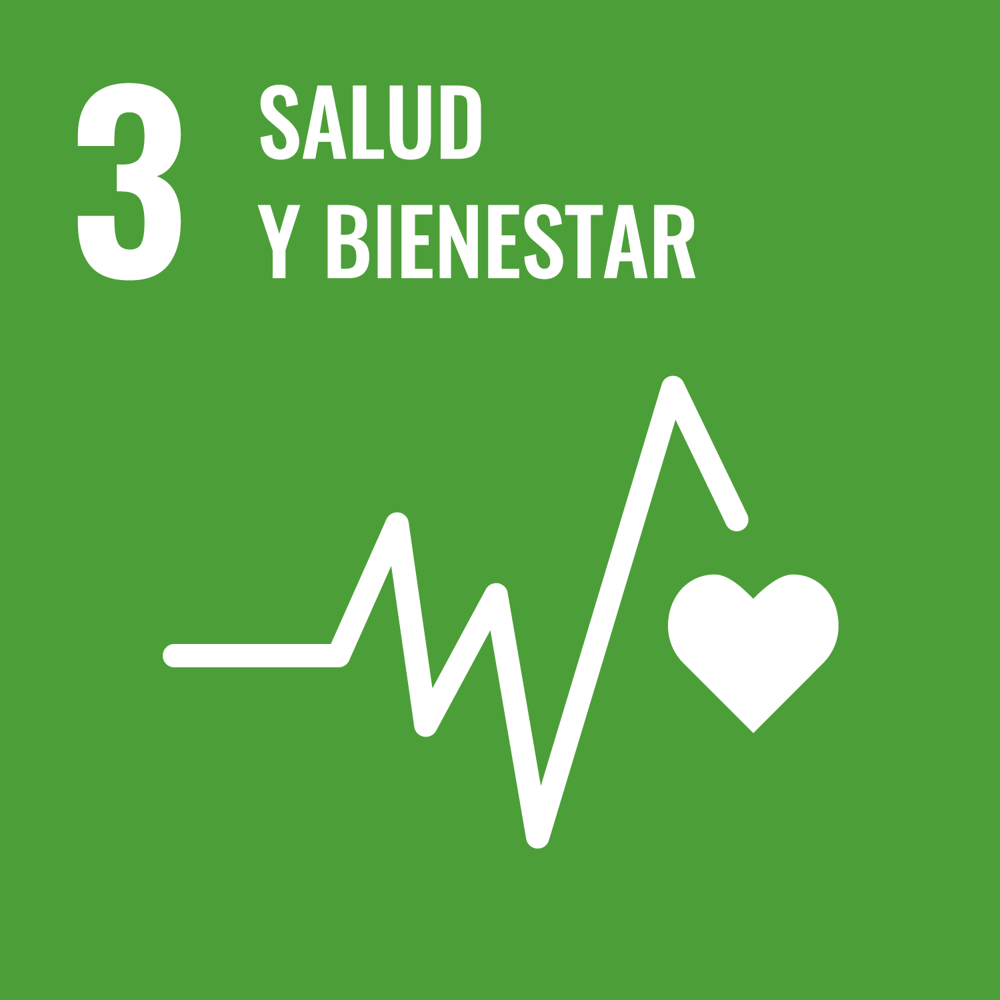
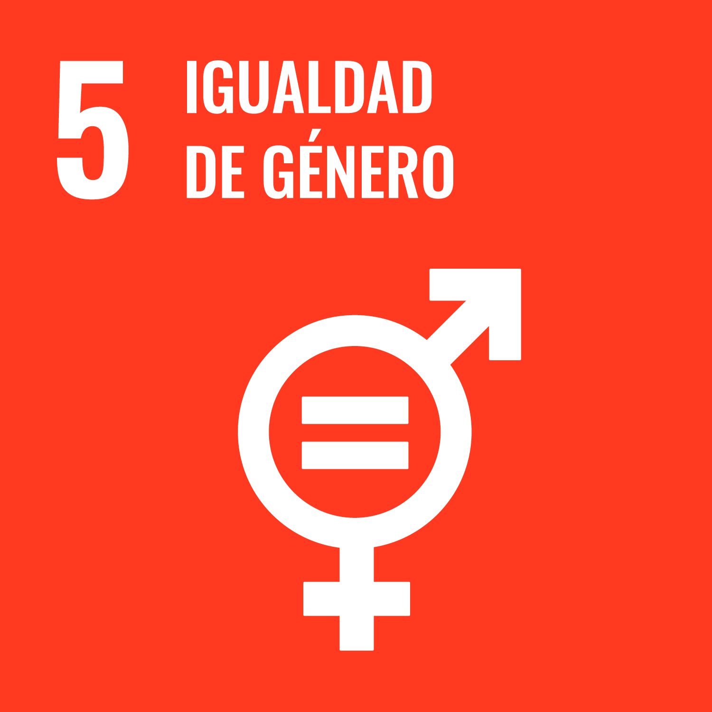
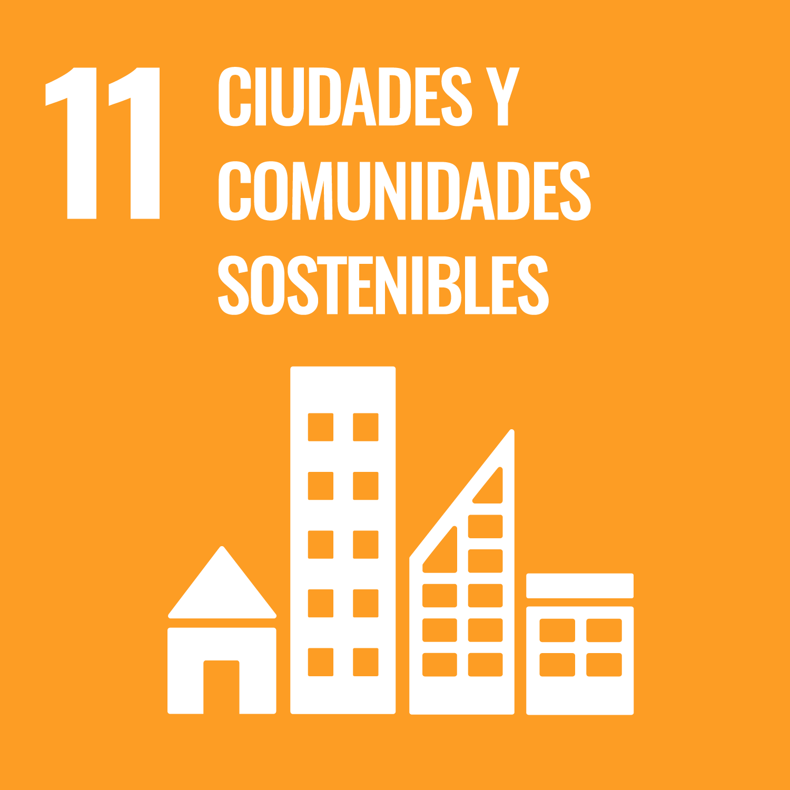
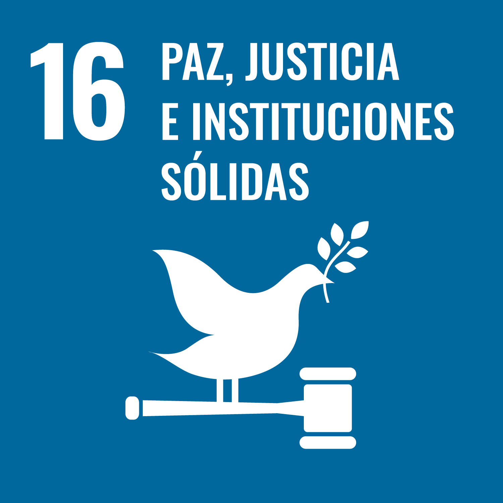

ODS 1 · Fin de la pobreza
Pretende poner fin a la pobreza en todas sus formas y garantizar que todas las personas puedan acceder a unas condiciones de vida dignas.
 Inicio
Inicio
En 2015, los Estados miembros de las Naciones Unidas aprobaron la Agenda 2030 para el Desarrollo Sostenible, un marco internacional que establece una serie de objetivos comunes para avanzar hacia un modelo de desarrollo más sostenible.
La Agenda 2030 se articula en torno a 17 Objetivos de Desarrollo Sostenible (ODS), que abordan algunos de los principales retos ambientales, sociales y económicos a los que se enfrenta la sociedad.
La Agenda 2030 para el Desarrollo Sostenible fue aprobada el 25 de septiembre de 2015 por los 193 Estados miembros de las Naciones Unidas.
Su finalidad es promover un desarrollo que permita mejorar el bienestar de las personas y proteger el planeta, teniendo en cuenta de forma conjunta las dimensiones económica, social y ambiental de la sostenibilidad.
La Agenda 2030 plantea una visión común basada en aspectos como las personas, el planeta, la prosperidad, la paz y la justicia, con la idea de que el progreso debe beneficiar a toda la sociedad y evitar que determinados colectivos queden atrás.
La Agenda 2030 no es únicamente un conjunto de objetivos ambientales. También aborda cuestiones sociales y económicas como la pobreza, la igualdad, la educación, el empleo, la innovación o la paz.
Los 17 Objetivos de Desarrollo Sostenible (ODS) constituyen el núcleo de la Agenda 2030. Representan los grandes retos que la comunidad internacional considera necesario afrontar para avanzar hacia una sociedad más justa, sostenible e inclusiva.
Los ODS abarcan cuestiones muy diferentes: la pobreza, la salud, la educación, la igualdad, el empleo, la innovación, el consumo responsable, la protección del medio ambiente o la construcción de sociedades pacíficas y justas.
Aunque cada objetivo se centra en un ámbito concreto, todos ellos están relacionados. Por este motivo, una actuación orientada a mejorar un determinado aspecto de la sostenibilidad puede contribuir al cumplimiento de varios ODS al mismo tiempo.
Pretende poner fin a la pobreza en todas sus formas y garantizar que todas las personas puedan acceder a unas condiciones de vida dignas.

Busca acabar con el hambre, mejorar la nutrición y garantizar el acceso de todas las personas a una alimentación suficiente y saludable.

Promueve una vida saludable y el bienestar de todas las personas en todas las etapas de la vida.

Busca garantizar una educación inclusiva y equitativa y favorecer oportunidades de aprendizaje a lo largo de toda la vida.

Pretende alcanzar la igualdad entre mujeres y hombres y eliminar todas las formas de discriminación por razón de género.

Busca garantizar la disponibilidad de agua, su gestión sostenible y el acceso a servicios adecuados de saneamiento.

Promueve el acceso a una energía segura, sostenible, moderna y cada vez más basada en fuentes renovables.

Favorece un crecimiento económico sostenible, el empleo de calidad y unas condiciones laborales dignas para todas las personas.

Promueve infraestructuras sostenibles, la innovación tecnológica y una industrialización responsable e inclusiva.

Pretende reducir las desigualdades económicas y sociales tanto dentro de los países como entre diferentes territorios.

Busca conseguir ciudades y comunidades más inclusivas, seguras, resilientes y respetuosas con el medio ambiente.

Promueve un uso eficiente de los recursos y modelos de producción y consumo que reduzcan los residuos y el impacto ambiental.

Plantea adoptar medidas para combatir el cambio climático y reducir sus consecuencias ambientales y sociales.

Busca proteger los océanos, los mares y los recursos marinos y garantizar su utilización de forma sostenible.

Promueve la protección de los ecosistemas terrestres, los bosques y la biodiversidad y lucha contra su degradación.

Busca promover sociedades pacíficas y justas, proteger los derechos de las personas y desarrollar instituciones eficaces y responsables.

Destaca la necesidad de cooperación entre administraciones, empresas, organizaciones y ciudadanía para conseguir los objetivos.
Los 17 ODS forman un conjunto integrado. No deben estudiarse como objetivos independientes: los avances en un objetivo pueden favorecer también el cumplimiento de otros.
Cada Objetivo de Desarrollo Sostenible se concreta en una serie de metas que permiten definir con mayor precisión qué se pretende conseguir.
En total, los 17 ODS se desarrollan mediante 169 metas, que abarcan aspectos muy diversos relacionados con el desarrollo sostenible.
Para comprobar si se avanza en el cumplimiento de esas metas, se utilizan indicadores que permiten medir la evolución y evaluar los resultados obtenidos.
Los ODS indican qué grandes objetivos se quieren alcanzar; las metas concretan esos objetivos y los indicadores permiten medir el grado de avance conseguido.
Si una empresa tecnológica quiere reducir su consumo energético, puede relacionar esa actuación con determinados ODS, establecer una meta concreta —por ejemplo, reducir el consumo de sus servidores— y utilizar indicadores como los kilovatios hora consumidos para comprobar si está avanzando.
Los Objetivos de Desarrollo Sostenible no deben entenderse de forma aislada. Los problemas ambientales, sociales y económicos están relacionados entre sí, por lo que una misma actuación puede contribuir al cumplimiento de varios ODS al mismo tiempo.
Por ejemplo, mejorar la eficiencia energética de una empresa puede contribuir a reducir el consumo de energía y, al mismo tiempo, disminuir las emisiones relacionadas con su actividad.
| Actuación | ODS relacionados |
|---|---|
| Reducir el consumo energético de los servidores |
ODS 7 — Energía asequible y no contaminante ODS 13 — Acción por el clima |
| Mejorar la accesibilidad de una aplicación web | ODS 10 — Reducción de las desigualdades |
| Favorecer la igualdad en la contratación |
ODS 5 — Igualdad de género ODS 8 — Trabajo decente y crecimiento económico |
| Prolongar la vida útil de ordenadores y otros dispositivos | ODS 12 — Producción y consumo responsables |
| Desarrollar nuevas soluciones y servicios digitales | ODS 9 — Industria, innovación e infraestructura |
| Proteger los datos personales y la privacidad de los usuarios | ODS 16 — Paz, justicia e instituciones sólidas |
Una misma actuación puede contribuir a varios ODS. Esto refleja el carácter integrado e interrelacionado de la Agenda 2030.
Una empresa que optimiza sus servidores para reducir el consumo energético puede contribuir al ODS 7, relacionado con la energía, y al ODS 13, relacionado con la acción por el clima. Si además prolonga la vida útil de sus equipos, también puede contribuir al ODS 12, relacionado con la producción y el consumo responsables.
El sector tecnológico también desempeña un papel importante en la consecución de los Objetivos de Desarrollo Sostenible. Las decisiones relacionadas con el diseño, desarrollo y uso de la tecnología pueden tener consecuencias ambientales, sociales y económicas.
Por ello, las empresas y los profesionales del sector informático pueden contribuir a los ODS mediante actuaciones que reduzcan el impacto ambiental de la tecnología, mejoren la accesibilidad de los servicios digitales y favorezcan un uso responsable de los recursos.
| Actuación en el sector tecnológico | ODS relacionados |
|---|---|
| Utilizar servidores e infraestructuras energéticamente eficientes | ODS 7 y ODS 13 |
| Diseñar páginas web y aplicaciones accesibles | ODS 10 |
| Prolongar la vida útil de los equipos informáticos y gestionar correctamente los residuos electrónicos | ODS 12 |
| Desarrollar soluciones digitales innovadoras | ODS 9 |
| Favorecer la igualdad y unas condiciones laborales adecuadas | ODS 5 y ODS 8 |
| Proteger los datos personales y la privacidad de los usuarios | ODS 16 |
Un equipo de desarrollo web puede contribuir a la Agenda 2030 optimizando sus aplicaciones para reducir el consumo de recursos, diseñando interfaces accesibles, protegiendo los datos personales de los usuarios y utilizando infraestructuras tecnológicas más eficientes.
Los ODS no son algo ajeno al trabajo de un profesional de la informática. Decisiones relacionadas con la accesibilidad, la eficiencia, la seguridad, la privacidad o el uso de los recursos pueden contribuir al desarrollo sostenible.
Una empresa de desarrollo web decide reducir el consumo energético de sus servidores, mejorar la accesibilidad de sus aplicaciones y ofrecer formación continua a sus trabajadores.
¿Con qué ODS relacionarías cada una de estas actuaciones? ¿Crees que alguna de ellas podría contribuir a más de un ODS?
Reducción del consumo energético: puede relacionarse principalmente con el ODS 7 (Energía asequible y no contaminante) y el ODS 13 (Acción por el clima).
Mejora de la accesibilidad: puede contribuir al ODS 10 (Reducción de las desigualdades), al facilitar el acceso a los servicios digitales a un mayor número de personas.
Formación continua de los trabajadores: puede relacionarse con el ODS 4 (Educación de calidad) y el ODS 8 (Trabajo decente y crecimiento económico).
Una misma actuación puede contribuir a varios ODS, ya que los objetivos de la Agenda 2030 están relacionados entre sí.